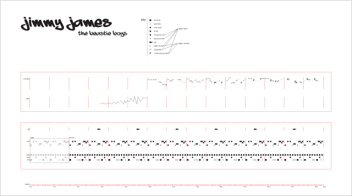
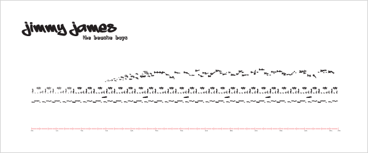

onomatopeia video
This project was for a course in motion design. We had to choose 30 seconds of a song, instruments only, and create a typographic animation for it. We started by mapping out the different instruments with shapes. Then we converted the shapes to type, and finally animated it all.
Click here to view the full-size PDF of the shape map.
Click here to view the full-size PDF of the type map.